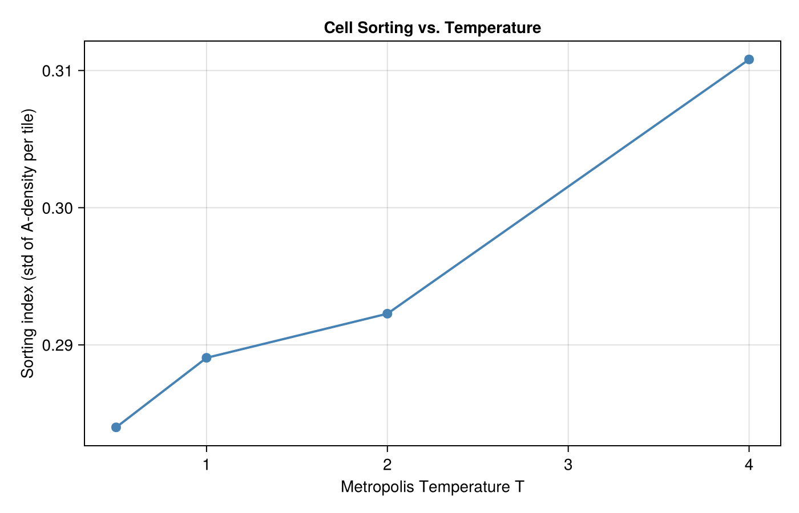

Parameter Sweeps with EnsembleProblem
One of the most powerful features of the PottsToolkit design is that PottsProblem is a first-class citizen of the SciML ecosystem. This means that SciMLBase.EnsembleProblem works out of the box — no adapter code, no monkey-patching. In this tutorial we sweep the Metropolis temperature T over four values, solve the same cell-sorting model for each, collect a cluster-size metric, and plot how temperature controls the degree of cell sorting.
Packages
using PottsToolkit
using SciMLBase
using Statistics
using CairoMakie
CairoMakie.activate!() # or GLMakie / WGLMakieBase model
We define a two-population sorting system (A and B cells prefer their own kind) and a base PottsProblem. Each ensemble member will modify only the algorithm temperature while sharing the same system.
A = CellType(:A)
B = CellType(:B)
Medium = CellType(:Medium, is_background = true)
sys = PottsSystem(
cell_types = [Medium, A, B],
penalties = [
VolumeComponent(
A => (λ = 5.0f0, target = 500),
B => (λ = 5.0f0, target = 500)
),
AdhesionComponent(
(A, Medium) => 16.0f0,
(B, Medium) => 16.0f0,
(A, A) => 2.0f0,
(B, B) => 2.0f0,
(A, B) => 14.0f0
)
]
)
base_prob = PottsProblem(
sys,
Dict(A => 25, B => 25),
(200, 200);
tspan = (0, 600),
topology = VonNeumannTopology{2}()
)PottsProblem{PottsState{Matrix{UInt32}, StructArrays.StructVector{@NamedTuple{volumes::Int32, target_volumes::Int32, surface_areas::Int32, target_surface_areas::Int32, cell_types::UInt8, pressures::Float32, tensions::Float32, anchor_x::Float32, anchor_y::Float32, anchor_z::Float32, force_x::Float32, force_y::Float32, force_z::Float32, target_lengths::Float32, current_lengths::Float32, major_axis_x::Float32, major_axis_y::Float32, major_axis_z::Float32, length_pressures::Float32, com_acc_sin_x::Float32, com_acc_cos_x::Float32, com_acc_sin_y::Float32, com_acc_cos_y::Float32, com_acc_sin_z::Float32, com_acc_cos_z::Float32, inertia_xx::Float32, inertia_yy::Float32, inertia_zz::Float32, inertia_xy::Float32, inertia_xz::Float32, inertia_yz::Float32, volume_lambdas::Float32, surface_area_lambdas::Float32, length_lambdas::Float32, adhesion_modifiers::Float32}, @NamedTuple{volumes::Vector{Int32}, target_volumes::Vector{Int32}, surface_areas::Vector{Int32}, target_surface_areas::Vector{Int32}, cell_types::Vector{UInt8}, pressures::Vector{Float32}, tensions::Vector{Float32}, anchor_x::Vector{Float32}, anchor_y::Vector{Float32}, anchor_z::Vector{Float32}, force_x::Vector{Float32}, force_y::Vector{Float32}, force_z::Vector{Float32}, target_lengths::Vector{Float32}, current_lengths::Vector{Float32}, major_axis_x::Vector{Float32}, major_axis_y::Vector{Float32}, major_axis_z::Vector{Float32}, length_pressures::Vector{Float32}, com_acc_sin_x::Vector{Float32}, com_acc_cos_x::Vector{Float32}, com_acc_sin_y::Vector{Float32}, com_acc_cos_y::Vector{Float32}, com_acc_sin_z::Vector{Float32}, com_acc_cos_z::Vector{Float32}, inertia_xx::Vector{Float32}, inertia_yy::Vector{Float32}, inertia_zz::Vector{Float32}, inertia_xy::Vector{Float32}, inertia_xz::Vector{Float32}, inertia_yz::Vector{Float32}, volume_lambdas::Vector{Float32}, surface_area_lambdas::Vector{Float32}, length_lambdas::Vector{Float32}, adhesion_modifiers::Vector{Float32}}, Int64}, Vector{Int32}, Vector{UInt32}}, Int64, PottsParameters{VonNeumannTopology{2}, Tuple{VolumePenalty{Rigid, Vector{Float32}}, AdhesionPenalty{Rigid, Matrix{Float32}, false}}, Tuple{VolumeTracker}, Tuple{}}, Base.Pairs{Symbol, Union{}, Nothing, @NamedTuple{}}}(PottsState{Matrix{UInt32}, StructArrays.StructVector{@NamedTuple{volumes::Int32, target_volumes::Int32, surface_areas::Int32, target_surface_areas::Int32, cell_types::UInt8, pressures::Float32, tensions::Float32, anchor_x::Float32, anchor_y::Float32, anchor_z::Float32, force_x::Float32, force_y::Float32, force_z::Float32, target_lengths::Float32, current_lengths::Float32, major_axis_x::Float32, major_axis_y::Float32, major_axis_z::Float32, length_pressures::Float32, com_acc_sin_x::Float32, com_acc_cos_x::Float32, com_acc_sin_y::Float32, com_acc_cos_y::Float32, com_acc_sin_z::Float32, com_acc_cos_z::Float32, inertia_xx::Float32, inertia_yy::Float32, inertia_zz::Float32, inertia_xy::Float32, inertia_xz::Float32, inertia_yz::Float32, volume_lambdas::Float32, surface_area_lambdas::Float32, length_lambdas::Float32, adhesion_modifiers::Float32}, @NamedTuple{volumes::Vector{Int32}, target_volumes::Vector{Int32}, surface_areas::Vector{Int32}, target_surface_areas::Vector{Int32}, cell_types::Vector{UInt8}, pressures::Vector{Float32}, tensions::Vector{Float32}, anchor_x::Vector{Float32}, anchor_y::Vector{Float32}, anchor_z::Vector{Float32}, force_x::Vector{Float32}, force_y::Vector{Float32}, force_z::Vector{Float32}, target_lengths::Vector{Float32}, current_lengths::Vector{Float32}, major_axis_x::Vector{Float32}, major_axis_y::Vector{Float32}, major_axis_z::Vector{Float32}, length_pressures::Vector{Float32}, com_acc_sin_x::Vector{Float32}, com_acc_cos_x::Vector{Float32}, com_acc_sin_y::Vector{Float32}, com_acc_cos_y::Vector{Float32}, com_acc_sin_z::Vector{Float32}, com_acc_cos_z::Vector{Float32}, inertia_xx::Vector{Float32}, inertia_yy::Vector{Float32}, inertia_zz::Vector{Float32}, inertia_xy::Vector{Float32}, inertia_xz::Vector{Float32}, inertia_yz::Vector{Float32}, volume_lambdas::Vector{Float32}, surface_area_lambdas::Vector{Float32}, length_lambdas::Vector{Float32}, adhesion_modifiers::Vector{Float32}}, Int64}, Vector{Int32}, Vector{UInt32}}(UInt32[0x00000000 0x00000000 … 0x00000000 0x00000000; 0x00000000 0x00000000 … 0x00000000 0x00000000; … ; 0x00000000 0x00000000 … 0x00000000 0x00000000; 0x00000000 0x00000000 … 0x00000000 0x00000000], @NamedTuple{volumes::Int32, target_volumes::Int32, surface_areas::Int32, target_surface_areas::Int32, cell_types::UInt8, pressures::Float32, tensions::Float32, anchor_x::Float32, anchor_y::Float32, anchor_z::Float32, force_x::Float32, force_y::Float32, force_z::Float32, target_lengths::Float32, current_lengths::Float32, major_axis_x::Float32, major_axis_y::Float32, major_axis_z::Float32, length_pressures::Float32, com_acc_sin_x::Float32, com_acc_cos_x::Float32, com_acc_sin_y::Float32, com_acc_cos_y::Float32, com_acc_sin_z::Float32, com_acc_cos_z::Float32, inertia_xx::Float32, inertia_yy::Float32, inertia_zz::Float32, inertia_xy::Float32, inertia_xz::Float32, inertia_yz::Float32, volume_lambdas::Float32, surface_area_lambdas::Float32, length_lambdas::Float32, adhesion_modifiers::Float32}[(volumes = 1, target_volumes = 500, surface_areas = 0, target_surface_areas = 0, cell_types = 0x02, pressures = 0.0, tensions = 0.0, anchor_x = 196.00002, anchor_y = 44.0, anchor_z = 0.0, force_x = 0.0, force_y = 0.0, force_z = 0.0, target_lengths = 0.0, current_lengths = 0.0, major_axis_x = 0.0, major_axis_y = 0.0, major_axis_z = 0.0, length_pressures = 0.0, com_acc_sin_x = -0.12533264, com_acc_cos_x = 0.9921148, com_acc_sin_y = 0.9822873, com_acc_cos_y = 0.18738122, com_acc_sin_z = 0.0, com_acc_cos_z = 0.0, inertia_xx = 0.0, inertia_yy = 0.0, inertia_zz = 0.0, inertia_xy = 0.0, inertia_xz = 0.0, inertia_yz = 0.0, volume_lambdas = 0.0, surface_area_lambdas = 0.0, length_lambdas = 0.0, adhesion_modifiers = 0.0), (volumes = 1, target_volumes = 500, surface_areas = 0, target_surface_areas = 0, cell_types = 0x02, pressures = 0.0, tensions = 0.0, anchor_x = 99.0, anchor_y = 130.0, anchor_z = 0.0, force_x = 0.0, force_y = 0.0, force_z = 0.0, target_lengths = 0.0, current_lengths = 0.0, major_axis_x = 0.0, major_axis_y = 0.0, major_axis_z = 0.0, length_pressures = 0.0, com_acc_sin_x = 0.031410683, com_acc_cos_x = -0.99950653, com_acc_sin_y = -0.8090168, com_acc_cos_y = -0.5877854, com_acc_sin_z = 0.0, com_acc_cos_z = 0.0, inertia_xx = 0.0, inertia_yy = 0.0, inertia_zz = 0.0, inertia_xy = 0.0, inertia_xz = 0.0, inertia_yz = 0.0, volume_lambdas = 0.0, surface_area_lambdas = 0.0, length_lambdas = 0.0, adhesion_modifiers = 0.0), (volumes = 1, target_volumes = 500, surface_areas = 0, target_surface_areas = 0, cell_types = 0x02, pressures = 0.0, tensions = 0.0, anchor_x = 162.0, anchor_y = 63.0, anchor_z = 0.0, force_x = 0.0, force_y = 0.0, force_z = 0.0, target_lengths = 0.0, current_lengths = 0.0, major_axis_x = 0.0, major_axis_y = 0.0, major_axis_z = 0.0, length_pressures = 0.0, com_acc_sin_x = -0.92977643, com_acc_cos_x = 0.3681247, com_acc_sin_y = 0.9177546, com_acc_cos_y = -0.39714798, com_acc_sin_z = 0.0, com_acc_cos_z = 0.0, inertia_xx = 0.0, inertia_yy = 0.0, inertia_zz = 0.0, inertia_xy = 0.0, inertia_xz = 0.0, inertia_yz = 0.0, volume_lambdas = 0.0, surface_area_lambdas = 0.0, length_lambdas = 0.0, adhesion_modifiers = 0.0), (volumes = 1, target_volumes = 500, surface_areas = 0, target_surface_areas = 0, cell_types = 0x02, pressures = 0.0, tensions = 0.0, anchor_x = 16.0, anchor_y = 109.0, anchor_z = 0.0, force_x = 0.0, force_y = 0.0, force_z = 0.0, target_lengths = 0.0, current_lengths = 0.0, major_axis_x = 0.0, major_axis_y = 0.0, major_axis_z = 0.0, length_pressures = 0.0, com_acc_sin_x = 0.4817537, com_acc_cos_x = 0.87630665, com_acc_sin_y = -0.27899107, com_acc_cos_y = -0.9602937, com_acc_sin_z = 0.0, com_acc_cos_z = 0.0, inertia_xx = 0.0, inertia_yy = 0.0, inertia_zz = 0.0, inertia_xy = 0.0, inertia_xz = 0.0, inertia_yz = 0.0, volume_lambdas = 0.0, surface_area_lambdas = 0.0, length_lambdas = 0.0, adhesion_modifiers = 0.0), (volumes = 1, target_volumes = 500, surface_areas = 0, target_surface_areas = 0, cell_types = 0x02, pressures = 0.0, tensions = 0.0, anchor_x = 88.0, anchor_y = 179.0, anchor_z = 0.0, force_x = 0.0, force_y = 0.0, force_z = 0.0, target_lengths = 0.0, current_lengths = 0.0, major_axis_x = 0.0, major_axis_y = 0.0, major_axis_z = 0.0, length_pressures = 0.0, com_acc_sin_x = 0.3681244, com_acc_cos_x = -0.92977655, com_acc_sin_y = -0.6129071, com_acc_cos_y = 0.79015493, com_acc_sin_z = 0.0, com_acc_cos_z = 0.0, inertia_xx = 0.0, inertia_yy = 0.0, inertia_zz = 0.0, inertia_xy = 0.0, inertia_xz = 0.0, inertia_yz = 0.0, volume_lambdas = 0.0, surface_area_lambdas = 0.0, length_lambdas = 0.0, adhesion_modifiers = 0.0), (volumes = 1, target_volumes = 500, surface_areas = 0, target_surface_areas = 0, cell_types = 0x02, pressures = 0.0, tensions = 0.0, anchor_x = 145.0, anchor_y = 16.0, anchor_z = 0.0, force_x = 0.0, force_y = 0.0, force_z = 0.0, target_lengths = 0.0, current_lengths = 0.0, major_axis_x = 0.0, major_axis_y = 0.0, major_axis_z = 0.0, length_pressures = 0.0, com_acc_sin_x = -0.9876883, com_acc_cos_x = -0.15643452, com_acc_sin_y = 0.4817537, com_acc_cos_y = 0.87630665, com_acc_sin_z = 0.0, com_acc_cos_z = 0.0, inertia_xx = 0.0, inertia_yy = 0.0, inertia_zz = 0.0, inertia_xy = 0.0, inertia_xz = 0.0, inertia_yz = 0.0, volume_lambdas = 0.0, surface_area_lambdas = 0.0, length_lambdas = 0.0, adhesion_modifiers = 0.0), (volumes = 1, target_volumes = 500, surface_areas = 0, target_surface_areas = 0, cell_types = 0x02, pressures = 0.0, tensions = 0.0, anchor_x = 163.0, anchor_y = 74.0, anchor_z = 0.0, force_x = 0.0, force_y = 0.0, force_z = 0.0, target_lengths = 0.0, current_lengths = 0.0, major_axis_x = 0.0, major_axis_y = 0.0, major_axis_z = 0.0, length_pressures = 0.0, com_acc_sin_x = -0.91775477, com_acc_cos_x = 0.39714763, com_acc_sin_y = 0.7289686, com_acc_cos_y = -0.6845471, com_acc_sin_z = 0.0, com_acc_cos_z = 0.0, inertia_xx = 0.0, inertia_yy = 0.0, inertia_zz = 0.0, inertia_xy = 0.0, inertia_xz = 0.0, inertia_yz = 0.0, volume_lambdas = 0.0, surface_area_lambdas = 0.0, length_lambdas = 0.0, adhesion_modifiers = 0.0), (volumes = 1, target_volumes = 500, surface_areas = 0, target_surface_areas = 0, cell_types = 0x02, pressures = 0.0, tensions = 0.0, anchor_x = 82.0, anchor_y = 33.0, anchor_z = 0.0, force_x = 0.0, force_y = 0.0, force_z = 0.0, target_lengths = 0.0, current_lengths = 0.0, major_axis_x = 0.0, major_axis_y = 0.0, major_axis_z = 0.0, length_pressures = 0.0, com_acc_sin_x = 0.53582674, com_acc_cos_x = -0.844328, com_acc_sin_y = 0.86074203, com_acc_cos_y = 0.50904137, com_acc_sin_z = 0.0, com_acc_cos_z = 0.0, inertia_xx = 0.0, inertia_yy = 0.0, inertia_zz = 0.0, inertia_xy = 0.0, inertia_xz = 0.0, inertia_yz = 0.0, volume_lambdas = 0.0, surface_area_lambdas = 0.0, length_lambdas = 0.0, adhesion_modifiers = 0.0), (volumes = 1, target_volumes = 500, surface_areas = 0, target_surface_areas = 0, cell_types = 0x02, pressures = 0.0, tensions = 0.0, anchor_x = 58.0, anchor_y = 27.0, anchor_z = 0.0, force_x = 0.0, force_y = 0.0, force_z = 0.0, target_lengths = 0.0, current_lengths = 0.0, major_axis_x = 0.0, major_axis_y = 0.0, major_axis_z = 0.0, length_pressures = 0.0, com_acc_sin_x = 0.96858317, com_acc_cos_x = -0.24868992, com_acc_sin_y = 0.7501111, com_acc_cos_y = 0.6613118, com_acc_sin_z = 0.0, com_acc_cos_z = 0.0, inertia_xx = 0.0, inertia_yy = 0.0, inertia_zz = 0.0, inertia_xy = 0.0, inertia_xz = 0.0, inertia_yz = 0.0, volume_lambdas = 0.0, surface_area_lambdas = 0.0, length_lambdas = 0.0, adhesion_modifiers = 0.0), (volumes = 1, target_volumes = 500, surface_areas = 0, target_surface_areas = 0, cell_types = 0x02, pressures = 0.0, tensions = 0.0, anchor_x = 57.0, anchor_y = 8.0, anchor_z = 0.0, force_x = 0.0, force_y = 0.0, force_z = 0.0, target_lengths = 0.0, current_lengths = 0.0, major_axis_x = 0.0, major_axis_y = 0.0, major_axis_z = 0.0, length_pressures = 0.0, com_acc_sin_x = 0.97591674, com_acc_cos_x = -0.21814325, com_acc_sin_y = 0.2486899, com_acc_cos_y = 0.96858317, com_acc_sin_z = 0.0, com_acc_cos_z = 0.0, inertia_xx = 0.0, inertia_yy = 0.0, inertia_zz = 0.0, inertia_xy = 0.0, inertia_xz = 0.0, inertia_yz = 0.0, volume_lambdas = 0.0, surface_area_lambdas = 0.0, length_lambdas = 0.0, adhesion_modifiers = 0.0) … (volumes = 1, target_volumes = 500, surface_areas = 0, target_surface_areas = 0, cell_types = 0x01, pressures = 0.0, tensions = 0.0, anchor_x = 97.0, anchor_y = 125.00001, anchor_z = 0.0, force_x = 0.0, force_y = 0.0, force_z = 0.0, target_lengths = 0.0, current_lengths = 0.0, major_axis_x = 0.0, major_axis_y = 0.0, major_axis_z = 0.0, length_pressures = 0.0, com_acc_sin_x = 0.09410826, com_acc_cos_x = -0.99556196, com_acc_sin_y = -0.7071069, com_acc_cos_y = -0.70710665, com_acc_sin_z = 0.0, com_acc_cos_z = 0.0, inertia_xx = 0.0, inertia_yy = 0.0, inertia_zz = 0.0, inertia_xy = 0.0, inertia_xz = 0.0, inertia_yz = 0.0, volume_lambdas = 0.0, surface_area_lambdas = 0.0, length_lambdas = 0.0, adhesion_modifiers = 0.0), (volumes = 1, target_volumes = 500, surface_areas = 0, target_surface_areas = 0, cell_types = 0x01, pressures = 0.0, tensions = 0.0, anchor_x = 8.0, anchor_y = 64.0, anchor_z = 0.0, force_x = 0.0, force_y = 0.0, force_z = 0.0, target_lengths = 0.0, current_lengths = 0.0, major_axis_x = 0.0, major_axis_y = 0.0, major_axis_z = 0.0, length_pressures = 0.0, com_acc_sin_x = 0.2486899, com_acc_cos_x = 0.96858317, com_acc_sin_y = 0.904827, com_acc_cos_y = -0.42577937, com_acc_sin_z = 0.0, com_acc_cos_z = 0.0, inertia_xx = 0.0, inertia_yy = 0.0, inertia_zz = 0.0, inertia_xy = 0.0, inertia_xz = 0.0, inertia_yz = 0.0, volume_lambdas = 0.0, surface_area_lambdas = 0.0, length_lambdas = 0.0, adhesion_modifiers = 0.0), (volumes = 1, target_volumes = 500, surface_areas = 0, target_surface_areas = 0, cell_types = 0x01, pressures = 0.0, tensions = 0.0, anchor_x = 183.00002, anchor_y = 8.0, anchor_z = 0.0, force_x = 0.0, force_y = 0.0, force_z = 0.0, target_lengths = 0.0, current_lengths = 0.0, major_axis_x = 0.0, major_axis_y = 0.0, major_axis_z = 0.0, length_pressures = 0.0, com_acc_sin_x = -0.5090411, com_acc_cos_x = 0.8607423, com_acc_sin_y = 0.2486899, com_acc_cos_y = 0.96858317, com_acc_sin_z = 0.0, com_acc_cos_z = 0.0, inertia_xx = 0.0, inertia_yy = 0.0, inertia_zz = 0.0, inertia_xy = 0.0, inertia_xz = 0.0, inertia_yz = 0.0, volume_lambdas = 0.0, surface_area_lambdas = 0.0, length_lambdas = 0.0, adhesion_modifiers = 0.0), (volumes = 1, target_volumes = 500, surface_areas = 0, target_surface_areas = 0, cell_types = 0x01, pressures = 0.0, tensions = 0.0, anchor_x = 91.00001, anchor_y = 183.00002, anchor_z = 0.0, force_x = 0.0, force_y = 0.0, force_z = 0.0, target_lengths = 0.0, current_lengths = 0.0, major_axis_x = 0.0, major_axis_y = 0.0, major_axis_z = 0.0, length_pressures = 0.0, com_acc_sin_x = 0.2789909, com_acc_cos_x = -0.96029377, com_acc_sin_y = -0.5090411, com_acc_cos_y = 0.8607423, com_acc_sin_z = 0.0, com_acc_cos_z = 0.0, inertia_xx = 0.0, inertia_yy = 0.0, inertia_zz = 0.0, inertia_xy = 0.0, inertia_xz = 0.0, inertia_yz = 0.0, volume_lambdas = 0.0, surface_area_lambdas = 0.0, length_lambdas = 0.0, adhesion_modifiers = 0.0), (volumes = 1, target_volumes = 500, surface_areas = 0, target_surface_areas = 0, cell_types = 0x01, pressures = 0.0, tensions = 0.0, anchor_x = 70.00001, anchor_y = 159.0, anchor_z = 0.0, force_x = 0.0, force_y = 0.0, force_z = 0.0, target_lengths = 0.0, current_lengths = 0.0, major_axis_x = 0.0, major_axis_y = 0.0, major_axis_z = 0.0, length_pressures = 0.0, com_acc_sin_x = 0.8090169, com_acc_cos_x = -0.5877854, com_acc_sin_y = -0.96029365, com_acc_cos_y = 0.27899122, com_acc_sin_z = 0.0, com_acc_cos_z = 0.0, inertia_xx = 0.0, inertia_yy = 0.0, inertia_zz = 0.0, inertia_xy = 0.0, inertia_xz = 0.0, inertia_yz = 0.0, volume_lambdas = 0.0, surface_area_lambdas = 0.0, length_lambdas = 0.0, adhesion_modifiers = 0.0), (volumes = 1, target_volumes = 500, surface_areas = 0, target_surface_areas = 0, cell_types = 0x01, pressures = 0.0, tensions = 0.0, anchor_x = 88.0, anchor_y = 57.0, anchor_z = 0.0, force_x = 0.0, force_y = 0.0, force_z = 0.0, target_lengths = 0.0, current_lengths = 0.0, major_axis_x = 0.0, major_axis_y = 0.0, major_axis_z = 0.0, length_pressures = 0.0, com_acc_sin_x = 0.3681244, com_acc_cos_x = -0.92977655, com_acc_sin_y = 0.97591674, com_acc_cos_y = -0.21814325, com_acc_sin_z = 0.0, com_acc_cos_z = 0.0, inertia_xx = 0.0, inertia_yy = 0.0, inertia_zz = 0.0, inertia_xy = 0.0, inertia_xz = 0.0, inertia_yz = 0.0, volume_lambdas = 0.0, surface_area_lambdas = 0.0, length_lambdas = 0.0, adhesion_modifiers = 0.0), (volumes = 1, target_volumes = 500, surface_areas = 0, target_surface_areas = 0, cell_types = 0x01, pressures = 0.0, tensions = 0.0, anchor_x = 141.0, anchor_y = 185.0, anchor_z = 0.0, force_x = 0.0, force_y = 0.0, force_z = 0.0, target_lengths = 0.0, current_lengths = 0.0, major_axis_x = 0.0, major_axis_y = 0.0, major_axis_z = 0.0, length_pressures = 0.0, com_acc_sin_x = -0.96029365, com_acc_cos_x = -0.2789912, com_acc_sin_y = -0.45399052, com_acc_cos_y = 0.8910065, com_acc_sin_z = 0.0, com_acc_cos_z = 0.0, inertia_xx = 0.0, inertia_yy = 0.0, inertia_zz = 0.0, inertia_xy = 0.0, inertia_xz = 0.0, inertia_yz = 0.0, volume_lambdas = 0.0, surface_area_lambdas = 0.0, length_lambdas = 0.0, adhesion_modifiers = 0.0), (volumes = 1, target_volumes = 500, surface_areas = 0, target_surface_areas = 0, cell_types = 0x01, pressures = 0.0, tensions = 0.0, anchor_x = 147.00002, anchor_y = 165.0, anchor_z = 0.0, force_x = 0.0, force_y = 0.0, force_z = 0.0, target_lengths = 0.0, current_lengths = 0.0, major_axis_x = 0.0, major_axis_y = 0.0, major_axis_z = 0.0, length_pressures = 0.0, com_acc_sin_x = -0.995562, com_acc_cos_x = -0.09410787, com_acc_sin_y = -0.8910064, com_acc_cos_y = 0.45399067, com_acc_sin_z = 0.0, com_acc_cos_z = 0.0, inertia_xx = 0.0, inertia_yy = 0.0, inertia_zz = 0.0, inertia_xy = 0.0, inertia_xz = 0.0, inertia_yz = 0.0, volume_lambdas = 0.0, surface_area_lambdas = 0.0, length_lambdas = 0.0, adhesion_modifiers = 0.0), (volumes = 1, target_volumes = 500, surface_areas = 0, target_surface_areas = 0, cell_types = 0x01, pressures = 0.0, tensions = 0.0, anchor_x = 60.0, anchor_y = 167.00002, anchor_z = 0.0, force_x = 0.0, force_y = 0.0, force_z = 0.0, target_lengths = 0.0, current_lengths = 0.0, major_axis_x = 0.0, major_axis_y = 0.0, major_axis_z = 0.0, length_pressures = 0.0, com_acc_sin_x = 0.9510565, com_acc_cos_x = -0.30901703, com_acc_sin_y = -0.8607419, com_acc_cos_y = 0.5090416, com_acc_sin_z = 0.0, com_acc_cos_z = 0.0, inertia_xx = 0.0, inertia_yy = 0.0, inertia_zz = 0.0, inertia_xy = 0.0, inertia_xz = 0.0, inertia_yz = 0.0, volume_lambdas = 0.0, surface_area_lambdas = 0.0, length_lambdas = 0.0, adhesion_modifiers = 0.0), (volumes = 1, target_volumes = 500, surface_areas = 0, target_surface_areas = 0, cell_types = 0x01, pressures = 0.0, tensions = 0.0, anchor_x = 73.0, anchor_y = 156.0, anchor_z = 0.0, force_x = 0.0, force_y = 0.0, force_z = 0.0, target_lengths = 0.0, current_lengths = 0.0, major_axis_x = 0.0, major_axis_y = 0.0, major_axis_z = 0.0, length_pressures = 0.0, com_acc_sin_x = 0.7501111, com_acc_cos_x = -0.66131186, com_acc_sin_y = -0.9822872, com_acc_cos_y = 0.1873814, com_acc_sin_z = 0.0, com_acc_cos_z = 0.0, inertia_xx = 0.0, inertia_yy = 0.0, inertia_zz = 0.0, inertia_xy = 0.0, inertia_xz = 0.0, inertia_yz = 0.0, volume_lambdas = 0.0, surface_area_lambdas = 0.0, length_lambdas = 0.0, adhesion_modifiers = 0.0)], Int32[50], UInt32[0x00000000, 0x00000000, 0x00000000, 0x00000000, 0x00000000, 0x00000000, 0x00000000, 0x00000000, 0x00000000, 0x00000000 … 0x00000000, 0x00000000, 0x00000000, 0x00000000, 0x00000000, 0x00000000, 0x00000000, 0x00000000, 0x00000000, 0x00000000], Int32[0]), (0, 600), PottsParameters{VonNeumannTopology{2}, Tuple{VolumePenalty{Rigid, Vector{Float32}}, AdhesionPenalty{Rigid, Matrix{Float32}, false}}, Tuple{VolumeTracker}, Tuple{}}(VonNeumannTopology{2}(), (VolumePenalty{Rigid, Vector{Float32}}(Float32[0.0, 5.0, 5.0]), AdhesionPenalty{Rigid, Matrix{Float32}, false}(Float32[0.0 16.0 16.0; 16.0 2.0 14.0; 16.0 14.0 2.0])), (VolumeTracker(),), ()), Base.Pairs{Symbol, Union{}, Nothing, @NamedTuple{}}())Temperature sweep values
temperatures = [0.5f0, 1.0f0, 2.0f0, 4.0f0]4-element Vector{Float32}:
0.5
1.0
2.0
4.0Ensemble setup
prob_func receives the base problem and the ensemble index i; it returns a modified problem or a new algorithm. Here we bundle algorithm + problem into a named tuple via the SciMLBase.EnsembleProblem prob_func / output_func interface. The standard pattern stores the temperature in the metadata and reconstructs the algorithm inside prob_func.
function output_func(sol, i)
# Compute a scalar sorting metric: mean size of contiguous same-type clusters.
# type ID 1 = A (first non-background type, in declaration order)
final_state = sol.u[end]
n = final_state.N_cells[]
types = Array(final_state.cell_data.cell_types)
a_cell_ids = Set(findall(==(1), types[1:n]))
grid = Array(final_state.grid)
Nx, Ny = size(grid)
tile = 20
densities = Float64[]
for ix in 1:tile:(Nx - tile), iy in 1:tile:(Ny - tile)
block = grid[ix:(ix + tile - 1), iy:(iy + tile - 1)]
push!(densities, mean(x -> x ∈ a_cell_ids, block))
end
metric = std(densities) ## higher std → more sorted
return (metric, false)
end
ensemble_prob = SciMLBase.EnsembleProblem(
base_prob;
output_func = output_func
)EnsembleProblem with problem PottsProblemRun the sweep
We use EnsembleSerial for reproducibility. Switch to EnsembleThreads for a free speedup on multi-core machines.
results = Vector{Float64}(undef, length(temperatures))
for (i, T) in enumerate(temperatures)
alg = CheckerboardMetropolis(T = T, sweeps_per_step = 10)
sim = SciMLBase.solve(
ensemble_prob, alg, SciMLBase.EnsembleSerial();
trajectories = 1,
saveat = 60
)
results[i] = sim.u[1] ## output_func returned the scalar metric
endPlot results
Higher temperature → less sorting → lower spatial variance of cell-type density.
fig = Figure(resolution = (700, 450))
ax = Axis(fig[1, 1];
xlabel = "Metropolis Temperature T",
ylabel = "Sorting index (std of A-density per tile)",
title = "Cell Sorting vs. Temperature"
)
scatterlines!(ax, Float32.(temperatures), results;
color = :steelblue,
markersize = 12,
linewidth = 2
)
save("parameter_sweep_sorting.png", fig)
fig
This page was generated using Literate.jl.